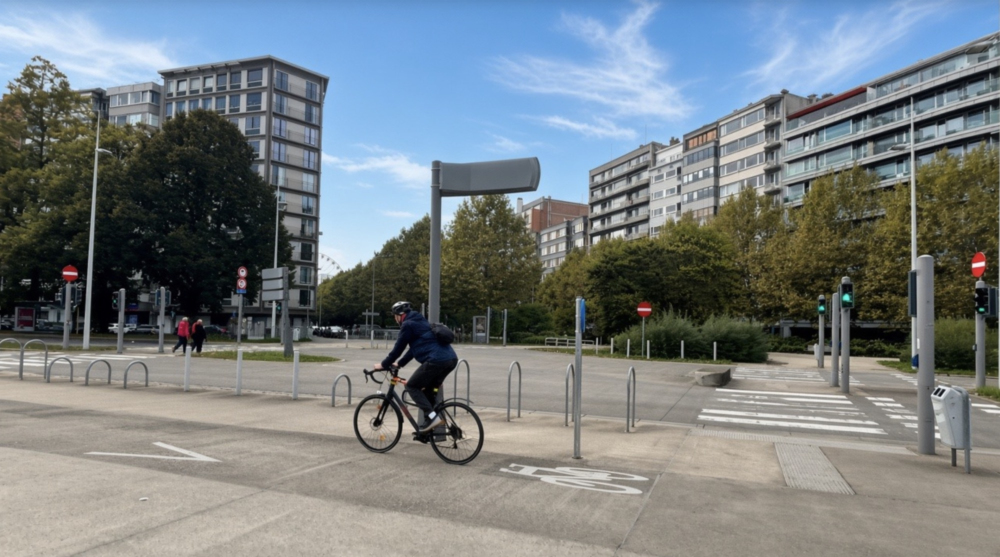
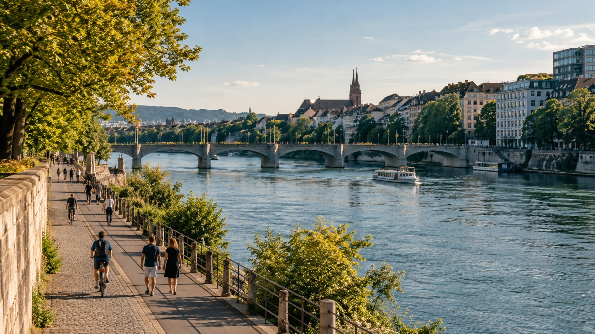

For outdoor activity platforms
Help your users choose when and where to be active outdoors.
GOTime puts heat and air-quality information beside a planned run, walk or ride. People can compare another time or place inside the app they already use.

The problem
Planning a run still means interpreting several readings.
Someone has an evening run in their calendar. Their app shows a temperature and an air-quality reading, but leaves them to work out whether the morning or another place would fit the plan better. GOTime brings that comparison into the planning moment.

GOTime
Compare the options beside a planned activity.
A runner has chosen 18:00. GOTime places the heat and PM2.5 outlook for that time beside an earlier option, so they can see what changes before deciding.
The comparison is designed for the planning step in an outdoor activity app.
Explore the exampleHow it works
Start with the activity. Show the relevant conditions.
A place, time and activity give environmental information a purpose. GOTime sets those details beside heat and air-quality estimates, then shows what changes across the options.
Air pollution includes particles such as PM2.5 and gases such as NO₂ and ground-level ozone. Pollen levels are another condition people may consider when planning time outdoors. The GOTime example shown here uses heat and PM2.5.
Read about the scienceFor platform teams
Put the comparison where people already plan.
The useful moment is when someone chooses a workout, a route or a group session. GOTime can bring environmental context into that existing flow.
Activity planningLet someone compare another time before confirming a run, walk or ride.
Route planningShow the available conditions beside the place a user has selected.
Group sessionsGive organisers a common view when setting the time for an outdoor activity.
A partner pilot can test whether people use the comparison, return to it, and engage more with the planning feature in their app.
GOTime for outdoor appsScientific foundation
Research guides which outdoor conditions belong in the plan.
Our work draws on evidence about air pollution, heat and health. Pollen adds another consideration for people with allergies. We keep the underlying signals visible, beginning with heat and PM2.5 in the GOTime example.
See the research behind the approach
Our team
Environmental research and product work, in one team.
FerryWellCo began with research into air pollution, heat and cardiovascular health. GOTime brings that work closer to the moment someone chooses when and where to be active.
Supported by DLAB Amsterdam Dive

Talk to us
Could GOTime fit your platform?
Tell us where your users plan outdoor activity and what information would help them choose a time or place. We can discuss a focused integration pilot.